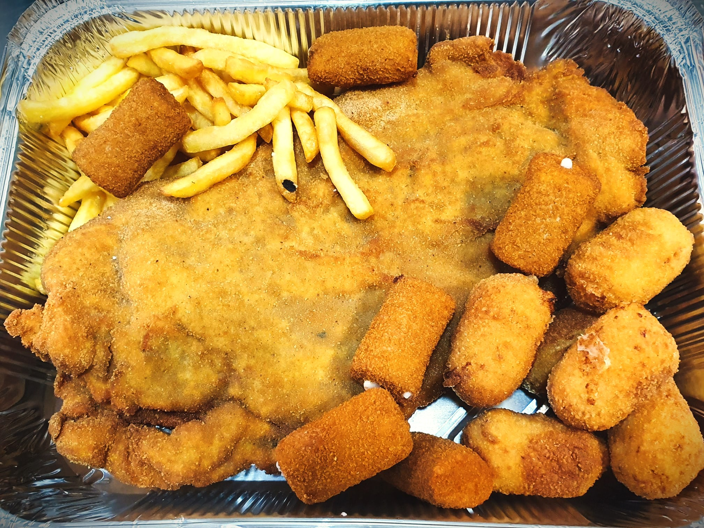
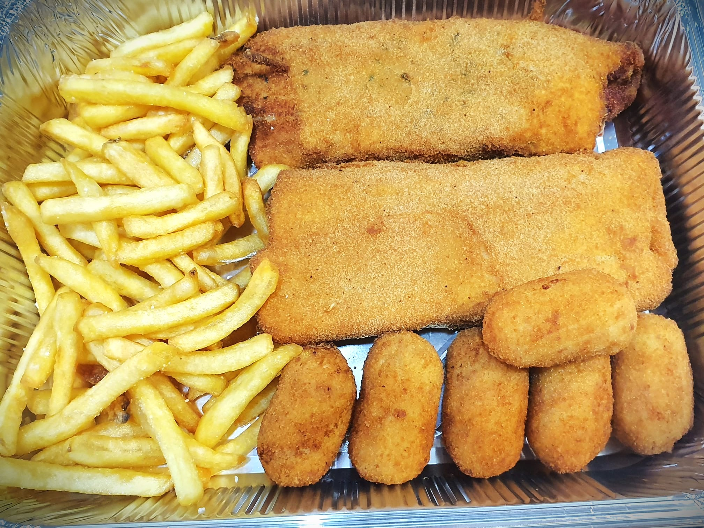

Cachopos y elaborados
¡¡Conoce nuestros cachopos!!


Variedad de cachopos
-
Cachopo de Ternera
-
Cachopo de Pollo
-
Cachopo de Cerdo Ibérico
-
Cachopo de Lomo de Orza
Ingredientes extras
- Queso Idiazabal
- Cebolla caramelizada
- Rulo de cabra
- Roquefort
- Crema de cabrales
- Pimientos de piquillo